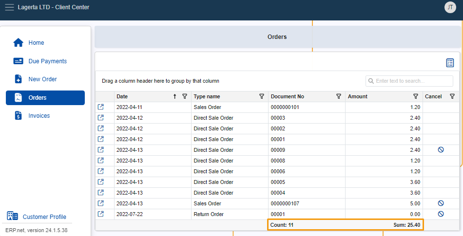
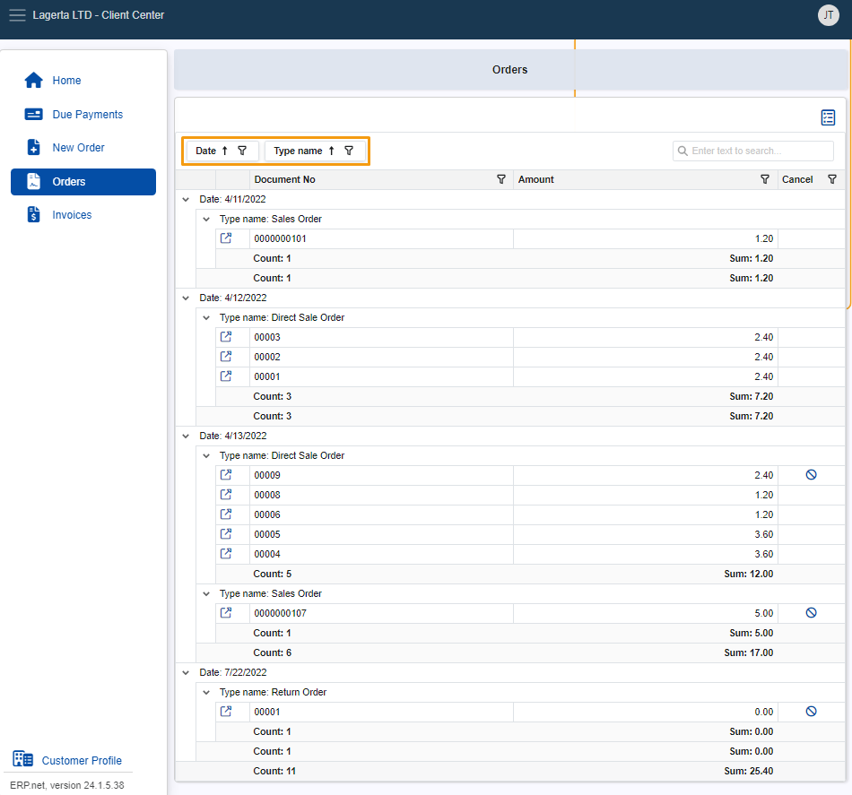
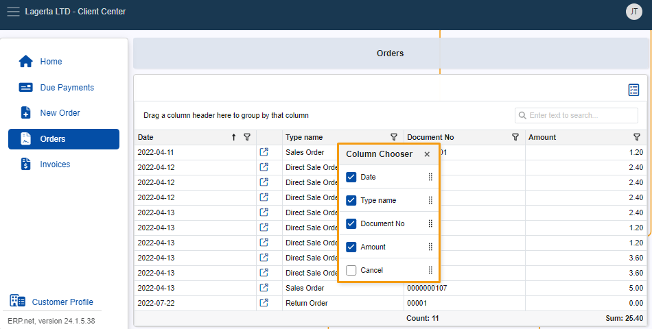

Grid control
The Grid control comprises a collection of tools built-in within Client Center navigators.
It offers functionalities like sorting, filtering, and summarizing information, which are collectively responsible for displaying and organizing data in a more intuitive, use-case-specific way.
Total summary
The Total summary option automatically calculates the Count (number) of documents and the total Sum of their amounts across all pages of a given navigator.
Information is displayed at the bottom of the table, under the Document No and Amount columns, respectively.

Filter and search
Using the Column filter and the Search Box, you can easily filter your existing documents, as well as search for and find specific ones.
Column filter
The Column filter is accessible through the funnel button at the far-right of a column's title.
Once you expand it, you can decide exactly how that particular column should filter the navigator's contents.
For instance, you may filter the Date column to display documents only from a specific month of a year, or the Type name column to show records only from a given type.

Search Box
The Search Box allows you to input a word, letter, or number and then see items containing that input in any of the navigator's columns.

Grouping and summarizing
You can group a navigator's contents by their column headers in order to organize them in a more specific tree-like hierarchical structure.
With the Group footer summary option, you can also see summarized information for each group, which includes counts for document numbers and sums for document amounts.
To group, simply drag and drop a column header into the ”Drag a column header here to group by that column” row above the table.

You can also group by multiple columns by dragging and dropping additional column headers next to the first one.
Existing records will first be grouped by the initial column, and then by each subsequent one you include.

Column chooser
The Column Chooser option allows you to decide which columns to display in a navigator, as well as determine their order.
To access it, click on the blue icon above the Search Box.

Choose which columns will be displayed by checking the ones that you want to show.

Save and restore layout
However you modify your Client Center navigator layout, your last preferred view will be saved and restored the next time you log in, ensuring a personalized and consistent experience.
Note
The screenshots taken for this article are from v24 of the platform.